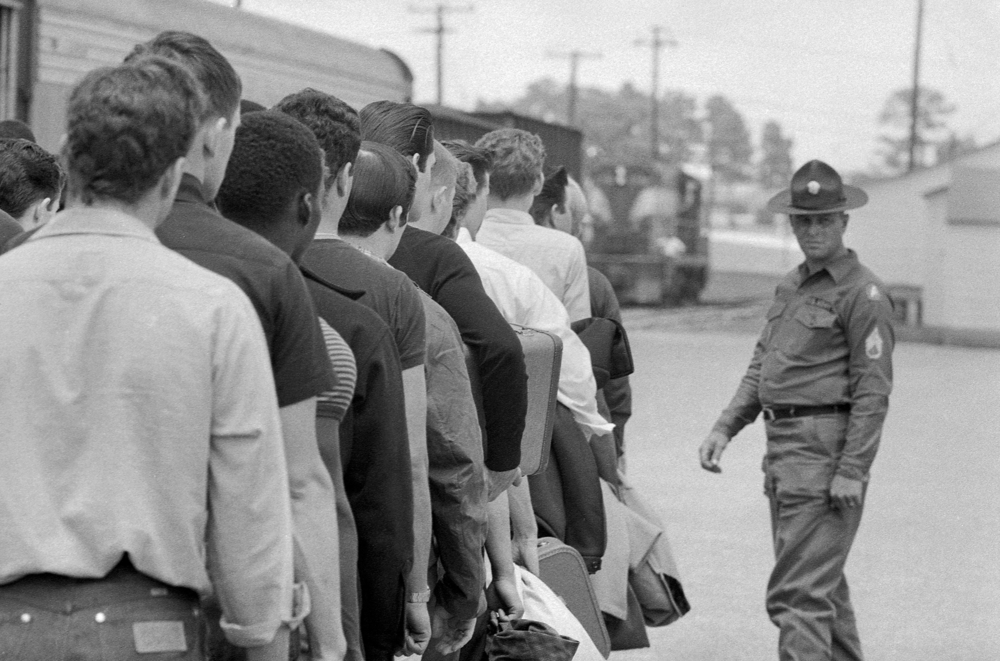

The shift to an all-volunteer force
The debates surrounding the draft that arose during the Vietnam War are one of the many reminders of the tragic period in the history of the US. It signified the end of the era where everyone may have been forced to serve in the army.
In January, 1973, the draft in the United States officially came to an end. In ending the practice of drafting men into military service, President Richard Nixon's administration made a series of reforms which stemmed from a decade of protest. Drafting had become an impossible procedure, a political burden, and a moral difficulty. All the subsequent conflicts fought by Americans since then, from the Gulf War to those in Iraq and Afghanistan, have been waged without a draft in place.

.jpg)

Timeline of resistance and reform
- 1964Gulf of Tonkin Resolution authorizes U.S. military escalation. WRL cosponsors New York draft-card burning.
- 1965SDS leads a 20,000-person antiwar march on Washington. The antidraft movement begins organizing nationally.
- 1967Muhammad Ali refuses induction. Stop the Draft Week mobilizes nationwide. More than 30,000 are drafted monthly.
- 1969First draft lottery is held. Statisticians document its non-randomness; the courts uphold it.
- 1970National Guardsmen fire on Kent State protestors, killing four students. Public opinion turns decisively against the war.
- 1972WRL membership reaches 15,000. The Nixon administration formalizes the transition away from conscription.
- 1973The U.S. ends military conscription. The all-volunteer force becomes the new standard.
- 1974President Ford announces conditional amnesty for Vietnam-era draft evaders.
- 1977President Carter issues a broader pardon, closing the legal chapter on the era.
Significance in American history
The controversies and conflicts surrounding the Vietnam War Draft will forever remain a reminder of major tragedies within American history not only since it marked a shift from the lottery system but also highlighted several biases in the social system. Revolution in the Vietnam war draft took the form of deserters, evaders, and others who were perceived as political enemies of the nation. Its legacy was finally capped off with the amnesty program which was an official resolution for the disobedience caused by dodgers, and although this may have concluded the issue, still the lasting effects are seen in military conscription systems today.